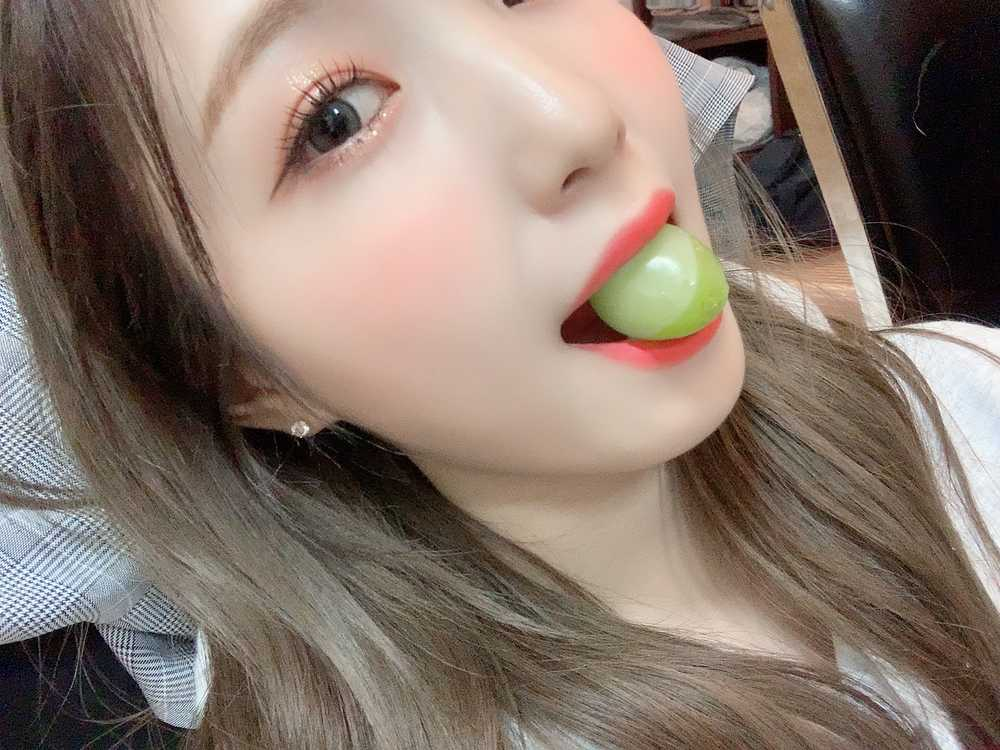

さっきメール送って
気づいたら二度寝しちゃった😳笑
ひいだよ🍓
bisオフショット👗💖
違う衣装バージョン💋
やっぱり1通目の100点満点正解者は
いなかったなあ多分🤔笑
正解は…
ユリのお母さんが送ってくれたマスカットが大きくてさらに美味しくて
びっくりしてる顔😳でした笑
さすがに満点の答えは
難しかったと思うからおまけとして
「美味しいもの食べて驚いてる顔」ってのも
OKにしてあげる〜😚笑
本当に一粒が大きくて🍇
とっても美味しかったです☺️
昨日スーパーに行ったら
無糖ヨーグルトを見つけたのね🛒
値段を見たら。。
一昨日違うスーパで買ったときの半額の値段で
売られていた…🤦🏻♀️
その上そっちの方が量も多かった😢
ショックだったけどこういうことも
またひとつ学べたという意味では
いい経験だったかな😌😌
↑突然なる前向き思考😅
そういえばいま韓国は雪が降ってます☃️
昨日の春みたいな天気は一体どこに
飛んで行ったのだろうか🛸💨ぷしゅ〜ん
이호のところは天気どう？？？☀️☁️☔️☃️
それじゃあ準備してきます🧳💨
눈 왔다😳
이호 봤어요??
오늘은 너무 추우니까 밖에 나갈 일이 있으면
따뜻하게 입어요ㅜㅜ
한국에서는 비가 오는날에 매번이 아니더라도 전을 먹잖아요??
그러면 눈이 오는날에는 뭘 먹어요..🤔??
그런거 없나..??ㅎㅎㅎ
요즘 심심할 때 예쁜카페를 찾고있는데
이호 가 추천하고싶은 카페가 있어요??🍰
저는 어디에가도 무조건 아메리카노를 마셔요☕️
아메리카노가 맛있고 디저트나 샌드위치도 맛있는
좋은 카페가 있으면 알려주세용🥰
아... 갑자기 카야토스트 먹고싶다...
그거 일본에서 없는것 같아요🤔🤔
제가 그냥 모르는건가??ㅋㅋㅋ
엄마한테 소개하고싶다🥪ㅎㅎㅎㅎ

マスカット大きすぎて
顔が縦に伸びてまーす😮
유리어머니 맛있는 머스캣을 보내주셔서
감사합니다 ㅜㅜ
こういう変な顔のは
ひいめーるでしか公開しませんㅋㅋㅋㅋ
ばいばーい👋
ひいまる🥟